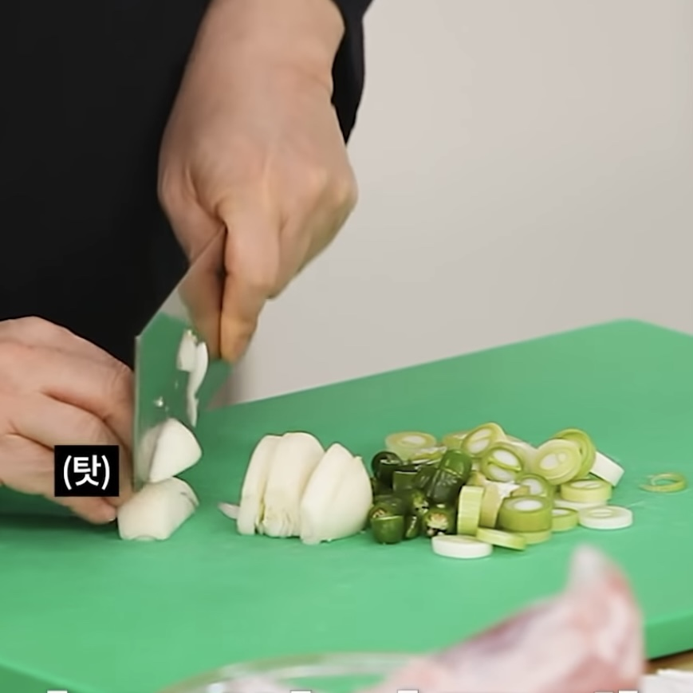

밥도둑 돼지고기 김치찜
조리 40분~1시간 | 초급 | 조회수 222
-- Chef Recipe 재료
돼지고기전지 1kg, 신김치 1.3kg, 양파 1/2개(100g), 대파 1컵(80g), 청양고추 3개(20g),
황설탕 3큰술(30g), 국간장 2큰술(20g), 된장 1큰술(15g), 간마늘 1큰술(15g),
굵은 고춧가루 2큰술(10g), 물 6컵(1.2L)
-- Chef Recipe 만드는 방법

1. 설탕, 국간장, 된장, 간마늘, 고춧가루를 섞어 양념장을 만든다.
2. 양파는 굵게 채 썰고 대파는 송송 썰고 청양고추는 두껍게 썬다.
3. 고기는 주먹 크기로 자른다.
4. 냄비에 김치를 깔고 고기를 올린 후 다시 김치로 덮어준다.
5. 그 위에 양파, 청양고추, 대파를 넣는다.
6. 물과 양념장을 잘 섞어 부어준다.
7. 센 불로 켜고 끓으면 중약불로 줄여 뚜껑을 덮고 졸인다.
8. 김치와 고기가 물러지면 간을 본 후 기호에 맞게 식초를 넣는다.
9. 식초를 골고루 섞어준 후 완성한다.
-- 요리 Tip !
김치찜은 지방이 포인트! 지방이 적당히 들어가야 맛있다!